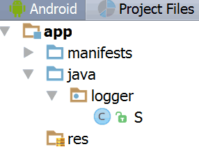

Часто бывает так, что при переходе от одного проекта к другому, постоянно требуются одни и те же классы или наборы классов. До недавнего времени я решал это просто копированием из одного из предыдущих проектов попутно дополняя недостающий функциональностью.
Однако это чревато тем, что в разных проектах состав одного и того же класса получается разный и ты, в конце концов, уже не помнишь, какой проект содержит последнюю версию.
Так возникла идея использовать единые репозитории переиспользуемого кода. Ну а для того, чтобы не зависеть от расположения репозитория, был выбран метод публикации на общедоступном ресурсе с возможность подключения в любом проекте. Для публикации возьмем JitPack.io. Так как публикация при помощи JitPack.io выполняется буквально в несколько кликов.
В данной статья я рассмотрю простейший пример такого часто используемого кода. Простой логгер, ставящий целью просто заменять конструкцию Log.d(tag, msg) на что-то более простое. Я использую для этого: S.l(msg). Не будем сейчас поднимать вопрос универсальности логгера, данная статья не об этом.
Итак, есть код, который нужно сделать доступным между различными проектами. Приступаем:
- Создаем профиль на GitHub если у вас его еще не было. Допустим вы назвали его MyName
- Создаем проект в Android Studio. Без активити. Вычищаем ресурсы. В AndroidManifest.xml оставляем только что-то вроде:
Ну и соответственно переименовываем каталоги так как вам нужно. Сделаем для примера следующую структуру: <manifest package="logger"> <application /> </manifest> - Далее открываем
build.gradleуровня проекта и добавляем следующую строку в ветку «dependencies»:buildscript { dependencies { ... classpath 'com.github.dcendents:android-maven-gradle-plugin:1.3' } } - В
build.gradleуровня модуля добавляем:
где MyName – имя вашего профиля на GitHub.apply plugin: 'com.github.dcendents.android-maven' group = 'com.github.MyName' - Не забываем поменять android плагин c
applicationнаlibraryи убрать строку с applicationId. В итоге нашbuild.gradleуровня модуля будет выглядеть примерно следующим образом:apply plugin: 'com.android.library' apply plugin: 'com.github.dcendents.android-maven' group = 'com.github.MyName' android { compileSdkVersion 24 buildToolsVersion "24.0.1" defaultConfig { minSdkVersion 8 targetSdkVersion 24 versionCode 1 versionName "1.0" } } - Далее создаем репозиторий на GitHub. Назовем его, скажем, logger. Любым доступным способом заливаем туда следующие файлы и каталоги:
- собственно каталог с вашим классом, тот, где лежат
AndroidManifest.xmlиbuild.gradle. В наше случае - это: app - каталог
gradle/wrapper - файлы:
build.gradle, gradlew, gradlew.bat, settings.gradle
- собственно каталог с вашим классом, тот, где лежат
- После этого в GitHub идем на вкладку «releases» и создаем релиз. Присваиваем ему тэг, например: «1.0».
Вот собственно все! Публикация выполнена! Все что нужно в дальнейшем, чтобы использовать наш модуль в любом из проектов, это прописать следующие строки:
- В файл
build.gradleуровня проекта:allprojects { repositories { ... maven {url "https://jitpack.io"} } } - Собственно зависимость в
build.gradleуровня модуля в ветку «dependencies». В нашем примере получится следующее:dependencies { ... compile 'com.github.MyName:logger:1.0' }
Если что-то пошло не так, то можно проверить что модуль вообще устанавливается при помощи команды gradlew install из локального каталога, где лежит файл gradlew.
Рабочий пример можно взять здесь: https://github.com/Rexee/s